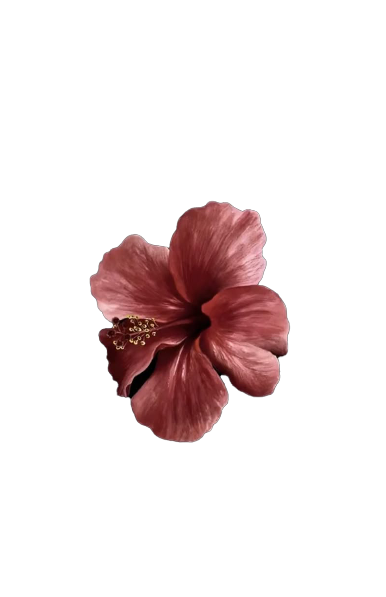
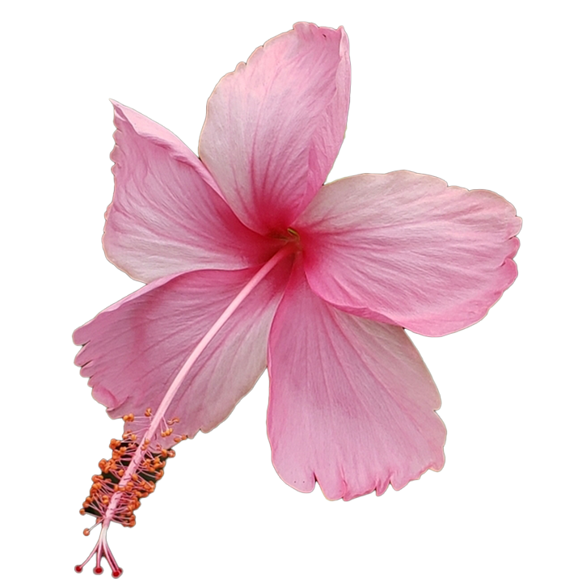

HIB
The essence of a Hibiscus is describe as heavenly and able to alude you out of a troubling mindset. To be specific, you could familiarize the scent with laughter and happiness. To tap in with more recgonizable scents, Hibiscus' are related to smells like something sweet, fruity, and almost tart. Which is ironic because this flower is viewed to be pretty tropical. These facts are related to the Hibiscus symbolization of relaxation, paradise and it's overall hypnotic beauty.
A Hibiscus is very recgonizable due to its eccentric tones that widely vary. A hibiscus is mainly known to have the sunset color pallete such as orange, pink, red, and the occasional hint of yellow. These colors bring all sorts of symbolization but it can be inferred to mainly bring a sense of longing for its abnormal color scheme.
Hibiscus has served as a national home remedy since ancient egypt. Its use stemmed around the world from egypt to iran, china, malaya, italy, and mainly the eastern side of the world. Hibiscus extract was used for centuries as an alluring perfume, herbs, teas, and as stated before..medicine. Since the ancient times, people were really big and strung on the use of Hibiscus due to its natural wonders.
In addition to abnormalities, if one is known to have high blood pressure, sugar levels, and swelling, the extract of hibiscus acts like an antibotic to these conflicts. The scent alone of a hibiscus is allowed to put a person at ease, it can be seen as hypnotic at times.